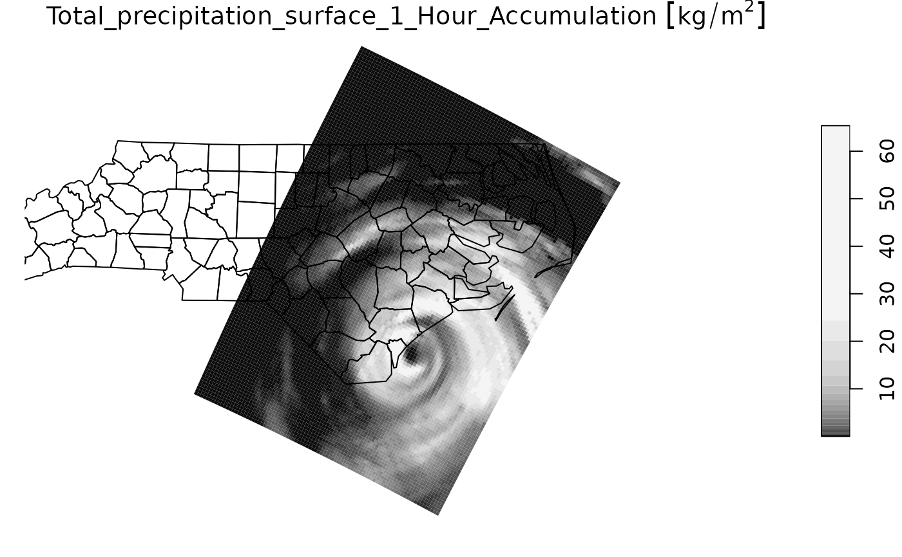

Read data from a file (or source) using the NetCDF library directly.
Arguments
- .x
NetCDF file or source as a character vector or an nc_proxy object.
- ...
ignored
- var
variable name or names (they must be on matching grids)
- ncsub
matrix of start, count columns (see Details)
- curvilinear
length two character named vector with names of variables holding longitude and latitude values for all raster cells. `stars` attempts to figure out appropriate curvilinear coordinates if they are not supplied.
- eps
numeric; dimension value increases are considered identical when they differ less than
eps- ignore_bounds
logical; should bounds values for dimensions, if present, be ignored?
- make_time
if
TRUE(the default), an attempt is made to provide a date-time class from the "time" variable- make_units
if
TRUE(the default), an attempt is made to set the units property of each variable- proxy
logical; if
TRUE, an object of classstars_proxyis read which contains array metadata only; ifFALSEthe full array data is read in memory. If not set, defaults toTRUEwhen the number of cells to be read is larger thanoptions(stars.n_proxy), or to 1e8 if that option was not set.- downsample
integer; number of cells to omit between samples along each dimension. e.g.
c(1,1,2)would return every other cell in x and y and every third cell in the third dimension (z or t). If 0, no downsampling is applied. Note that this transformation is applied AFTER NetCDF data are read using st_downsample. As such, if proxy=TRUE, this option is ignored.
Details
The following logic is applied to coordinates. If any coordinate axes have regularly spaced coordinate variables they are reduced to the offset/delta form with 'affine = c(0, 0)', otherwise the values of the coordinates are stored and used to define a rectilinear grid.
If the data has two or more dimensions and the first two are regular they are nominated as the 'raster' for plotting.
If the curvilinear argument is used it specifies the 2D arrays
containing coordinate values for the first two dimensions of the data read. It is currently
assumed that the coordinates are 2D and that they relate to the first two dimensions in
that order.
If var is not set the first set of variables on a shared grid is used.
start and count columns of ncsub must correspond to the variable dimension (nrows)
and be valid index using var.get.nc convention (start is 1-based). If the count value
is NA then all steps are included. Axis order must match that of the variable/s being read.
Examples
f <- system.file("nc/reduced.nc", package = "stars")
if (require(ncmeta, quietly = TRUE)) {
read_ncdf(f)
read_ncdf(f, var = c("anom"))
read_ncdf(f, ncsub = cbind(start = c(1, 1, 1, 1), count = c(10, 12, 1, 1)))
}
#> no 'var' specified, using sst, anom, err, ice
#> other available variables:
#> lon, lat, zlev, time
#> 0-360 longitude crossing the international date line encountered.
#> Longitude coordinates will be 0-360 in output.
#> Will return stars object with 16200 cells.
#> No projection information found in nc file.
#> Coordinate variable units found to be degrees,
#> assuming WGS84 Lat/Lon.
#> 0-360 longitude crossing the international date line encountered.
#> Longitude coordinates will be 0-360 in output.
#> Will return stars object with 16200 cells.
#> No projection information found in nc file.
#> Coordinate variable units found to be degrees,
#> assuming WGS84 Lat/Lon.
#> no 'var' specified, using sst, anom, err, ice
#> other available variables:
#> lon, lat, zlev, time
#> Will return stars object with 120 cells.
#> No projection information found in nc file.
#> Coordinate variable units found to be degrees,
#> assuming WGS84 Lat/Lon.
#> stars object with 4 dimensions and 4 attributes
#> attribute(s):
#> Min. 1st Qu. Median Mean 3rd Qu. Max. NA's
#> sst [°C] -1.39 -0.7200 -0.515 -0.53399999 -0.275 0.03 90
#> anom [°C] -1.07 -0.3625 0.195 0.05866667 0.555 0.92 90
#> err [°C] 0.30 0.3000 0.300 0.30299999 0.300 0.32 90
#> ice [percent] 0.01 0.1100 0.170 0.20937500 0.255 0.52 104
#> dimension(s):
#> from to offset delta refsys values x/y
#> lon 1 10 -1 2 WGS 84 NULL [x]
#> lat 1 12 -90 2 WGS 84 NULL [y]
#> zlev 1 1 NA NA NA 0
#> time 1 1 NA NA POSIXct 1981-12-31 UTC
if (require(ncmeta, quietly = TRUE)) {
#' precipitation data in a curvilinear NetCDF
prec_file = system.file("nc/test_stageiv_xyt.nc", package = "stars")
prec = read_ncdf(prec_file, curvilinear = c("lon", "lat"), ignore_bounds = TRUE)
}
#> no 'var' specified, using Total_precipitation_surface_1_Hour_Accumulation
#> other available variables:
#> lat, lon, time
#> Will return stars object with 236118 cells.
#> No projection information found in nc file.
#> Coordinate variable units found to be degrees,
#> assuming WGS84 Lat/Lon.
##plot(prec) ## gives error about unique breaks
## remove NAs, zeros, and give a large number
## of breaks (used for validating in detail)
qu_0_omit = function(x, ..., n = 22) {
x = units::drop_units(na.omit(x))
c(0, quantile(x[x > 0], seq(0, 1, length.out = n)))
}
if (require(dplyr, quietly = TRUE)) {
prec_slice = slice(prec, index = 17, along = "time")
plot(prec_slice, border = NA, breaks = qu_0_omit(prec_slice[[1]]), reset = FALSE)
nc = sf::read_sf(system.file("gpkg/nc.gpkg", package = "sf"), "nc.gpkg")
plot(st_geometry(nc), add = TRUE, reset = FALSE, col = NA)
}
